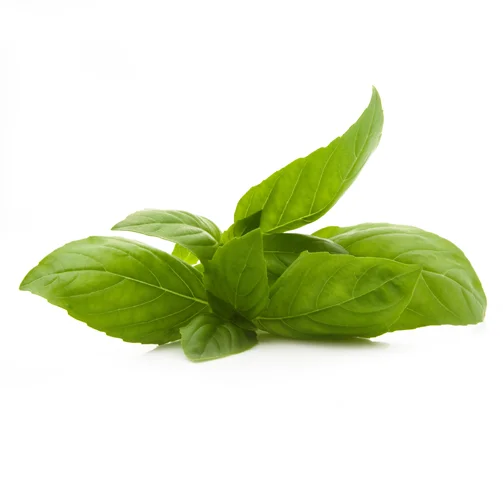

Azt mondják olasz konyha nincs; csak nápolyi, trentinói, szicíliai, toszkán és még sorolhatnánk. Az olasz gasztronómia roppant szerteágazó és sokrétű, ezért – 20 évvel ezelőtt az első budapesti Trattoria megálmodóiként – úgy igyekeztünk kialakítani profilunkat, az étel-, és borválaszték tekintetében, hogy az könnyen érthető és jól felismerhető stílust közvetítsen vendégeink számára.
A toszkán gasztronómiát éppen azért szerettük meg, mert középpontjában az egyszerűség áll, ami egy rendkívül igényes alapanyag felhasználással párosul. Kiemelten fontosnak tartjuk ezért, hogy kizárólag a legjobbnak számító olasz beszállítók termékei kerüljenek konyhánkra, hogy ez által biztosítsuk az állandó-, és magas minőségű színvonalat. Ehhez hozzátartozik az is, hogy az elmúlt 20 év alatt kiválasztott partnereinket rendszeresen felkeressük, hogy folyamatosan, helyben teszteljük, ellenőrizzük a termelés folyamatát, legyen szó akár sonkákról, marhahúsokról, vagy éppenséggel borokról.
Megnyitásunk óta, folyamatosan olasz séfek, szakácsok segítik munkánkat, így büszkék vagyunk arra, hogy Fabrizio Caldarazzo executive chef a mai napig oszlopos tagja konyhánknak.
A toszkán gasztronómia nemcsak arról híres, hogy rengeteg ételének központi eleme a zöldség, hanem arról is, hogy amikor marhahúsról van szó, nem ismer kompromisszumot. Így a Trattoria Toscanaban is a faszénen grillezett csupán sóval, borssal és olívaolajjal ízesített Firenzei óriás steakünket, háromféle kiváló minőségű marhából kínáljuk: tejes borjúból (costata di vitello), marha T-Bone steakből (Limousine), valamint Razza Chianina T-Bone steakből. Ezek a húsok szigorúan fagyasztás nélkül érkeznek hozzánk, a toszkán régióbeli termelők eredet-tanúsítvánnyal ellátva (Certificazione di Italiano), melyeket mindenkor csatolunk étlapunkhoz, hogy a származás helyét vendégeink is ellenőrizhessék.
A pizza sütés Olaszországban tájegységenként változik. Természetesen ebben is a toszkán stílust követjük, ezért kizárólag fatüzelésű kemencét-, vékony tésztát-, valamint sok feltétet használunk pizzáink elkészítésekor, melyeket mind a mai napig a főváros – egyik – legjobbjaként tartanak számon, a hazai és nemzetközi gasztronómusok.
Toszkánában, – Olaszország legnagyobb tartományában – úgy elegáns, ha a Trattoria (házias kisvendéglő), rendelkezik saját Enotecaval (bortároló és borkóstoló helyiség), amely borokkal ellátja el azt. Ennek megfelelően, szakmailag elismert itáliai és magyar pincészetekkel szorosan együttműködve, mi is kialakítottunk egy saját borbárt, melyet stílusosan L’Enoteca névre kereszteltünk. Több mint 200 féle bort tartunk itt, amelyekből vendégeink éppúgy válogathatnak kedvükre, mint a Trattoria Toscana borlapján szereplő közel, 100 féle tételből. Ezen a téren is az egyedülállóságra törekedtünk tehát, amelyet a tételek száma már önmagában is igazol. Havonta több száz bort kóstolunk annak érdekében, hogy borlapunkon a legkeresettebb palackok mellett olyan kuriózumok is fellelhetők legyenek, amelyek Magyarországon csak nálunk kaphatók.
Nyitvatartás
Vasárnap, hétfő, kedd, szerda : 12:00 – 23:00-ig, konyha 22:00-ig.
Csütörtök, péntek, szombat: 12:00 – 0:00-ig, konyha 23:00–ig.
Asztalfoglalás
Autentikus toszkán éttermünkben több mint 100 fogással és 200 borral várjuk Budapesten, a Belgrád rakpart 13. szám alatt.
Foglalási igényét érkezése előtt 24 órával tudjuk fogadni. A visszaigazolás miatt, kérjük, hogy telefonszámát minden esetben adja meg.
Küldjön e-mailt, vagy használja asztalfoglaló űrlapunkat:

Házhozszállítás a Wolt és Foodpanda partnereinken keresztül lehetséges.
Kérdése van? Hívja a +36 55 555 5555
